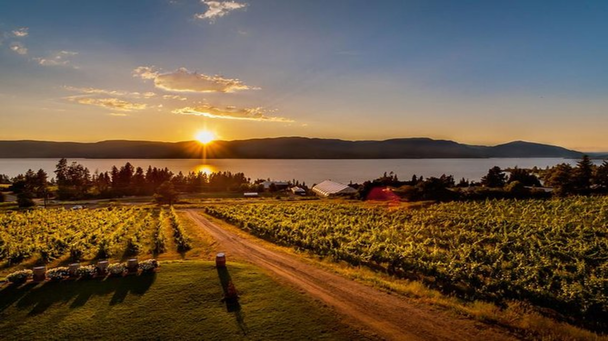
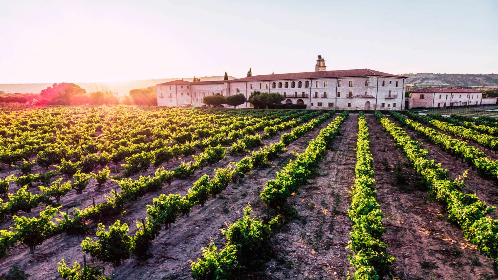

BODEGAS

MENDOZA

CATAMARCA

SAN LUIS
Mendoza es una ciudad de la región de Cuyo en Argentina y es el corazón de la zona vitivinícola argentina, famosa por sus Malbecs y otros vinos tintos.
San Fernando del Valle de Catamarca, oficialmente Ciudad de San Fernando del Valle de Catamarca, es la capital de la provincia argentina de Catamarca y la ciudad cabecera de su departamento Capital. Se trata de un centro turístico y comercial.
San Luis es una ciudad del centro de Argentina, en las montañas de las Sierras Grandes. Junto a la frondosa plaza principal, Plaza Pringles, hay una catedral del siglo XIX con una fachada neoclásica y dos campanarios gemelos.